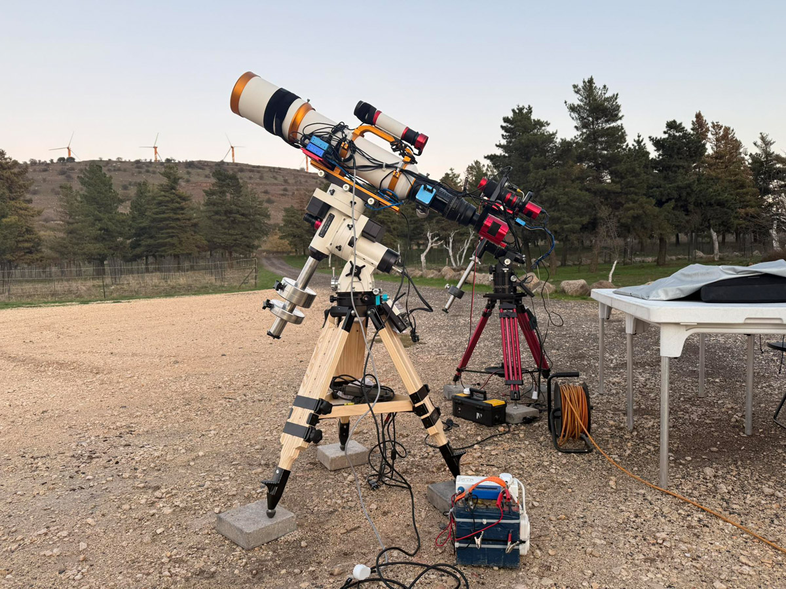

About

Welcome to dsoimage.com. I’m Shimon Avitan, and this site is a curated gallery of my deep-sky astrophotography: galaxies, nebulae, and star clusters captured from Israel under dark skies whenever conditions allow.
My goal is to present each target clearly and honestly—showing structure, color, and fine detail—while keeping the viewing experience fast and clean (preview images open into full-resolution frames with notes and links).
If you’d like to follow new work, you can find links in the sidebar. If you’re interested in the hardware and workflow behind the images, visit the Equipment page.